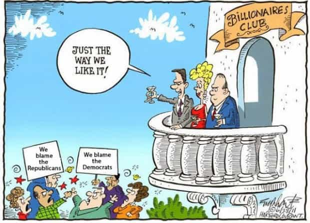

Corey is an iconoclast and the author of 'Man's Fight for Existence'. He believes that the key to life is for men to honour their primal nature. Visit his new website at primalexistence.com


It wasn’t long ago that the Left represented the anti-establishment wing in politics. They used to fight against globalism (remember the anti-globalization movement?) even if their motives were different from those of today’s anti-globalists, as well as being against censorship, imperialist wars, and the expanding powers of governments and corporations. But today, you see leftists protesting against Brexit, attacking and censoring anyone who disagrees with the establishment (using Twitter on their Apple products while sipping on their Starbucks coffee), and are calling for war in Syria to challenge the Russians. So, just how the hell did did they end up becoming the patsies for the elites?
To understand, we must go back to 2011 when the Occupy movement was ongoing. The Occupy protests, which now seem like ages ago, came about as a response to the economic downturn with the people realizing that they were being screwed by the system. We can debate endlessly about exactly who these people were and the motives behind them, but the important fact is that, to the elites, it was a sign that the people were waking up and challenging their power.
The elites were in a panic as this was the first time in post-war history that the people of West mobilized in mass to threaten their rule. So, the cabals decided that they needed to act fast before the whole movement evolved to a full-blown revolution. And they already had a plan in mind: the never antiquated strategy of divide and rule.
When the people are discontent and angry from being powerless and dispossessed, the pressure will mount and it won’t go anywhere. The people want to vent out their frustrations. The elites know that responding directly with repression only inspires greater desire to rise up, so instead of fighting it, they prefer to re-channel that pent up energy elsewhere.
On February 2012, with the Occupy movement still raging, the elites were given that golden opportunity—or, rather, they created one—when a black teenager was shot dead in Florida: the none other than the infamous Trayvon Martin case. The shooter wasn’t even a full white, but the elites jumped at the chance and used their control of the media to throw everything they had on it; anything to divert the public attention away from them. With their efforts, it quickly became the biggest story of America.
But they didn’t stop there. Police shootings, which have always been happening and to all races, were also highly publicized by the mainstream media to stoke liberal outrage and racial tensions that led to the creation of Black Lives Matter movement—a movement that is financed by George Soros and others to stir up unrests across America.
The diversion was complete as the people were now more interested in racial issues than the “1%” who were dictating their lives. The Occupy movement faded away and the people were now venting out their anger elsewhere. Although I don’t have as much proof as with the rise of BLM movement, I strongly suspect that the resurgence of social justice warriors around the same time is also the work of the elites who want the Leftists to target fellow citizens over asinine cultural issues rather than the established order.

Back in 19th century, Karl Marx claimed that religion and nationalism was being used to distract the masses from the fact that they were being oppressed under capitalism. If we were to apply this concept to the world today, the culture wars going on now are distractions to keep the masses from undermining the power of the elites.
The goal the elites is simple: divide the masses and let them fight each other so that they will never come together to topple those in power. Meanwhile, they themselves focus on expanding their own wealth and continue to implement institutional control to further their globalist plans. The worst case scenario the elites want to avoid is to have the common people unite as one, so they must do everything they can to fragment them by creating as many divisions as possible.
My understanding of their modus operandi is this: 1) Use hot-button issues to stir up controversy (something that doesn’t affect them like gay marriage, race issues, and all other politically correct nonsense). 2) Have the Leftists either get outraged or do something that will provoke a reaction from the Right. 3) Let the people vent out their anger onto each other and get at each other’s throats. 4) When the issue fades away, foment a new controversy to repeat the whole process. By cycling through them over and over again, the elites are able to maintain the status quo and keep the people from uniting against them.
Thus, we have our current situation where the masses are divided with blacks against whites, women against men, Islam and atheism against Christianity, Left against Right, and so on, but no more anti-globalization, Tea Party movement, or Occupy Wall Street.
As long as those on the left continue berating the right as racists, sexists, and bigots who are controlled by corporations and the right in turn accuse the left of being degenerate, socialist slackers who just want freebies from a nanny government, nothing will change. As long as the two sides see each others as enemies who are stupid and ignorant, and getting in the way of creating a decent society, the people will remain divided. As long as the rest of the population go berserk over wedding cakes for homosexuals, the latest “misogynist” outrage, or how a lion named Cecil got shot, the elites will continue to win.

I know they look like an occupying army, but there’s nothing to be alarmed about. They’re just your friendly neighborhood police doing their jobs to protect you from the “terrorists.”
First, while this article has been focused on how the Left has been toyed by the globalist elites, let’s not forget that the Right are not totally immune to their influence either. Remember how Neo-cons (globalist puppets disguised as conservatives) effectively lured the conservatives in America through faith and patriotism? The support they got from that base was the impetus to launch their war against Iraq based on bullshit evidences of WMD’s and Saddam–Al-Queda link. While the Right has changed a lot since then, there are still “conservatives” today who are itching for a war with Russia because… USA! USA! USA!.
Second, it is crucial to remember that although the main goal is to maintain divide and rule, it is not the end of it. The elites have far more sinister aims. By raising hell in societies through demographic conflicts and terrorism, the elites are preparing for a total social control. I get the feeling that the elites are letting the chaos and violence run its course so that the people from the two opposing camps will join together in their approval of new government measures for social control.
No matter their differences, when the people get terrified of savagery and disorder, they’ll welcome the state to intervene in the name of security. Europe is already getting used to large military presence on their streets while the US government is seemingly preparing for a war against their own citizens. A leaked Soros memo also reveals that the BLM movement is potentially being used to federalize the US police. While many people seem to be concerned about violence and terrorism, it seems those are just tools used by the elites to justify a totalitarian state in the near future.

The issue of culture wars is not an easy one as they are important in many ways, but are still forms of distraction implemented by the elites.
On one hand, we are playing into the hands of elites by raging against social justice and feminist pigshits instead of trying to stop the globalists, Zionists, bankers, mega-corporations, and the governments from undermining our existence. Really, do the issues of politically-incorrect Halloween costumes and whatever bathroom trannies use matter more than the fact that the middle-class is being destroyed, revelations of massive corruption in the DNC, the coming police-state, and the globalist wars that are causing death and destruction around the world? All the drama of outrage and counter-outrage is silly when the elites are snickering as their new world order is taking shape.
On the other hand, culture does matter in many ways. Uncontrolled immigration, anti-male laws, and censorship are all very relevant issues. And as much of the Leftists are now serving as pawns of the establishment, the situation isn’t exactly the divide and rule model I described above. In a way, we are now forced to fight the Left and everyone else who are getting in the way of fighting the globalist elites.
So, does this mean we should ally with those who scorn us? Or should we continue playing the elite’s games and bicker with their SJW drones? I don’t have a good answer, but whatever we choose to do, I believe it is crucial for us to focus our battles and not get trolled into petty issues that the mainstream media wants us to focus on. We should always keep in mind that it is always those at the top who are the true enemies of mankind.

Although we no longer see grassroots movements and popular mobilization, the current US election has shown that the people are still awake and sick of the establishment. To me, that alone is a hopeful sign that people are still willing to challenge the ruling class.
With Bernie Sanders brought down by the establishment and his supporters scattered into different camps, the only anti-establishment movement now is the presidential campaign led by Donald Trump. This is why we are seeing unprecedented efforts by the elites to bring down Trump and use disgruntled Leftists against his supporters.
I have my doubts about Trump, but he is thousand times preferable to the certain nightmare that Hillary Clinton will bring to America and the world if she gets elected. But besides voting, I believe that it is more important for the people themselves to wake up and be aware of the methods of control that are being implemented upon us. We can’t constantly expect some knight in shinning armor to come rally us; we must take the initiative ourselves and be willing to fight for our own destiny.
Read More: The Elites Have One Rule For Themselves, And One Rule For The Rest Of Us
{kind=link}